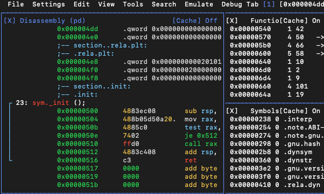
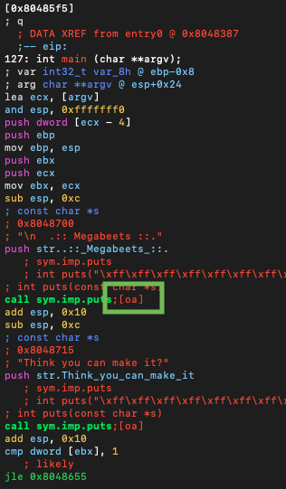

📆 24/09/2020, Wednesday
🕰 7:00 What a nice morning! And it’s so great to be woken up by a high-pitched cry in the ear… Well, after giving my daughter her breakfast and doing all the neccessary hygine procedures for us both, I left her by my side on the development carpet, so that I could develop myself…
🛠 Environment and Tools: macOS Catalina 10.15.6 (19G2021) + pyenv 1.2.20 + Python 3.8.5 + Visual Code Version: 1.49.1, VBox Version 6.1.12 r139181 (Qt5.6.3) + Kali Linux + radare2 4.6.0-git 25077 @ linux-x86-64 git.4.4.0-749-g2a0d8fbe5
For the purpose of iOS pentesting I faced the urge to learn the new tool radare2. Just for now I don’t see the advantages over IDA, but OWASP is insisting on that tool rather than on IDA, so there must be an explanation. Besides, if I’m serious about further developing my forensics skills, I need to know that tool quite well for it was developed specifically for the purpose of forensic investigation. Two possible advantages that I see so far is that it’s completely free and that it supports many platfroms including mobile ones. Since I’m turning my poor old iPad into a security assessment and investigation tool, I’d better learn to use it.
Meet radare 👋
🕰 10:47 I’m using this article to first dive into radar2. The installation steps for Mac seem to be the same as for Linux and rather straightforward.
git clone https://github.com/radare/radare2
cd radare2
sudo sys/install.sh
Oops… lot’s of warnings against running with root… Good. Let’s also try them for iPad (after all, that was the main idea of using it in the first place). Uf… You need GNU make to build me. Then, I can download the binary for iOS from here, although the developers insist I compile it myself. But may be another time when I “feel the flow” with radare2.
🕰 11:00 That way it didn’t work as well. Also, I’ve noticed, that after executing it on iPad and getting Killed: 9 error the iPad starts lagging and throws strange errors in Cydia. I don’t know yet how these events might be interconnected… May be it’s really better to compile it myself for iPad… I’ve already had my coffee and I’m just dying to have another one… . But I can’t be distracted, I have to get to some logical point first.
When trying to find the sources and instructions, I’ve run into this. Using ssh I’ve got my iPad’s arch:
/usr/bin/arch
> arm64
So, I’ve decided to give the easiest way another try 😄. I must note that radare2 takes lot’s of time to be downloaded. May be it’s a good time to make a cup of ☕ or to read the article further and try to “feel the flow” with the radare2 on PC at last. (Running a CLI tool on touch screen is another challenging step, better be comfortable with the commands first).
🕰 11:08 Almost downloaded. Droping it via ssh to my mobile device…
scp radare2-aarch64_4.5.1_iphoneos-arm.deb root@[my_iPad_IP😉]:~ # drop the *.deb package on iDevice
ssh root@[my_iPad_IP😉]
dpkg -i radare2-aarch64_4.5.1_iphoneos-arm.deb
> Selecting previously unselected package radare2.
> (Reading database ... 2480 files and directories currently installed.)
> Preparing to unpack radare2-aarch64_4.5.1_iphoneos-arm.deb ...
> Unpacking radare2 (4.5.1) ...
> Setting up radare2 (4.5.1) ...
CLI tool for reverse engineering…. That’s rather challenging. I remember when I used gdb for debugging an impressively huge executuable for Linux reversing and that was not a very sweet memory…. Well, one has to leave the comfort zone in order to evolve. So, let’s evolve. Besides, I found Hiew to be exremely comfortable to use, so, may be I’m not that a great stranger to unfriendly-UI-less tools.
Meet rabin 👋
Let’s run rabin2 against something simple:
rabin2 -I intro # intro is the simple hello-world-executable that Jacob Pimental has kindly compiled and shared along with his article I'm following
> arch x86
> baddr 0x0
> binsz 6485
> bintype elf
> bits 64
> canary false
> class ELF64
> compiler GCC: (GNU) 7.2.0
> crypto false
> endian little
> havecode true
> intrp /lib64/ld-linux-x86-64.so.2
> laddr 0x0
> lang c
> linenum true
> lsyms true
> machine AMD x86-64 architecture
> maxopsz 4
> minopsz 4
> nx true
> os linux
> pcalign 4
> pic true
> relocs true
> relro partial
> rpath NONE
> sanitiz false
> static false
> stripped false
> subsys linux
> va true
Now getting the strings from data section along with that:
rabin2 -z intro
> [Strings]
nth paddr vaddr len size section type string
―――――――――――――――――――――――――――――――――――――――――――――――――――――――
0 0x000006e4 0x000006e4 11 12 .rodata ascii Hello World
But to be fare, if the executable is big enough, then there would be the hell of information in the console… Not very comfortable to overview. And calling rabin2 -zz would just kill me (shows ALL the strings from the binary). Even for that teeny-tiny executable there was a hell bunch of strings that would be rather demotivating even for a very enthusiastic person (which I couldn’t call myself yet)… It’s hard to imagine how to cope with a real-world binary. In the reverse engineering strings are little gods… The main source of hints.
Beware ❗ Appreciation is contagious
🕰 12:15 PM Wow. I thought it’s just a CLI tool, but it actually has a nice CLI-pdedoGUI interface. It’s a hex editor as well and has some tools packed with it:

🕰 1:52 PM OMG❗ This tool is really amazing. I wouldn’t even dare to call it “a tool” 🔨. It’s more like a toolkit . While learning this tools with Jacob Pimental’s crackme from the article, I’ve managed to reverse all the code and almost found the second and the third key. What was left was reverse atoi(0x9) and atoi(0x539). I’ve thought of writing my python script to undo the atoi operation at first, but in his article Jacob Pimental has mentioned another tool from this toolkit: rax2. So, converting the integer back to string was as simple as running rax2 [my_integer] from r2 shell. I think, I’m about to “feel the flow” 🌊.
Diving deeper 🤿 🐠
Thursday
🕰 11:47 AM Yesterday evening just after my wushu training I got home with my mind fixed on the radare2. I was eager to learn to use it better and more than anything - to learn to use it on iPad. As far as I was too overwhelmed with that idea, I had to make my mind a treat and spent some time reading the article and following the steps even though it was getting very late and I’m waking up quite early now. Some of them appeared to be outdated, some - don’t work correctly on iPad. For example, to go to a specific function using its shortcut (on the picture below [;oa]) one has to be in VV mode (Graph Mode), then press o to get the promt and then type the second letter (in the example below it’s a). When the article was written, the command was g and not o.

But these are just minor things. This article was written by a man who is very enthusiatic and impressed by the tool and that makes the article so interesting and useful to read. And I think he manages to “infect” the reader with his admiration of the tool. Thank you!
After reading the first half of the first part I was already quite familiar with the interface. But not yet. It’s a long run, I feel.
Getting hands dirty 🧻
🕰 7:30 PM Dear diary, I can finally get back to this task! I went so crazy, that I’ve installed Kali on my Vbox to get the test vulnerable app running to learn some more tricks with radare2. I must say, I’m starting to understand, in what way it’s better than other tools. But some functionality impressed me so much that I could not resist the temptation to write about it. I understand that for gurus that must be funny to read and my amusement might be hilarious but I also presume that gurus won’t read this article (why would they), so I’m safe with my emotions.
The thing that amazed me so much was the way it can be used to smash the stack. So, the conclusion I’ve made is that it’s not just a disassembler, it’s so much more… Thanks again to Megabeets again! And also thanks to Bananamafia for the formulation of his description of wop command that helped me understand how it works.
Basically, the idea is as follows (more detailed walkthrough’s can be found in the articles mentioned above):
- find a vulnerable function (such that uses, for example,
putsorgets) - pass this function a ridiculously huge garbage-string where symbols’ sequences do not repeat (smart people say De Bruijn Pattern) so that given 4 symbols it’s can be easily and unambiguously located within that garbage string
- this string will overwrite the stack and will most likely overwrite the return address. When the function get’s the return address from the stack, it puts its value into
eip. We get theeipvalue and askr2withwop0command to locate the position of these symbols inside the garbage string - Now we now the exact amount of garbage to pass the program in order to overwrite the
ret addr.
🕰 7:55 PM Thanks to Megabeet once again, I’ve learned about pwntools. I like Python. 7:56 PM OMG… It appears as I’ve accidentally broken my pyenv config in .zshrc… Somehow it was completely overwritten with oh my zsh theme… Thanks to my poor understanding of all this stuff back then that led to dublications of configs across several files, including bash_profile. So, fixing it was just the matter of copy-pasting.
🕰 7:59 PM. It worked :happy: pyenv works now and I can activate my python3 environment to install pwntools. I’ll open Visual Code which is just perfect for coding simple programs and scripts.
🕰 8:09 PM I’ve copied the script and fixed a small bug following the instructions. When I copied it to my Kali I’ve run:
sudo chmod +x exploit.py
python3 exploit.py
# and got this error:
[+] Starting local process './megabeets_0x2': pid 1469
Traceback (most recent call last):
File "exploit.py", line 36, in <module>
main()
File "exploit.py", line 31, in main
leak = u32(leak)
File "/usr/local/lib/python3.8/dist-packages/pwnlib/context/__init__.py", line 1468, in setter
return function(*a, **kw)
File "/usr/local/lib/python3.8/dist-packages/pwnlib/util/packing.py", line 338, in routine
return {("little", True ): ls,
File "/usr/local/lib/python3.8/dist-packages/pwnlib/util/packing.py", line 306, in routine
return ops[op](fmt,data)
File "/usr/local/lib/python3.8/dist-packages/pwnlib/util/packing.py", line 289, in <lambda>
ops = {'p': struct.pack, 'u': lambda *a: struct.unpack(*(
struct.error: unpack requires a buffer of 4 bytes
I’ve started googling it at first. But then I don’t know why, I tried to run
chmod -x exploit.py
python3 exploit.py
# and voila!
root@kali:/home/sherlock/Documents# python3 exploit.py
[+] Starting local process './megabeets_0x2': pid 1482
[*] puts is at 0xf7d6a590
I don’t know why on Earth would I chown this in the first place, but it’s an interesting thing to note. But for today I guess that’s it. It was a difficult and very efficient day and I’ve deserved some rest 🍺.
Off for now!
References
[1] Megabeets blog (part 1 and part 2)